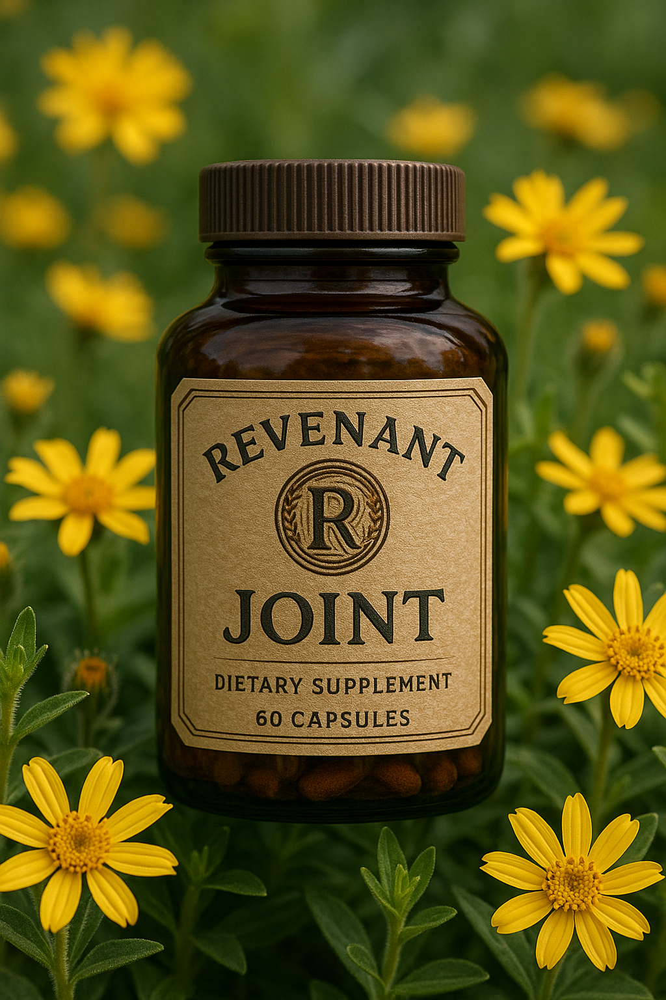
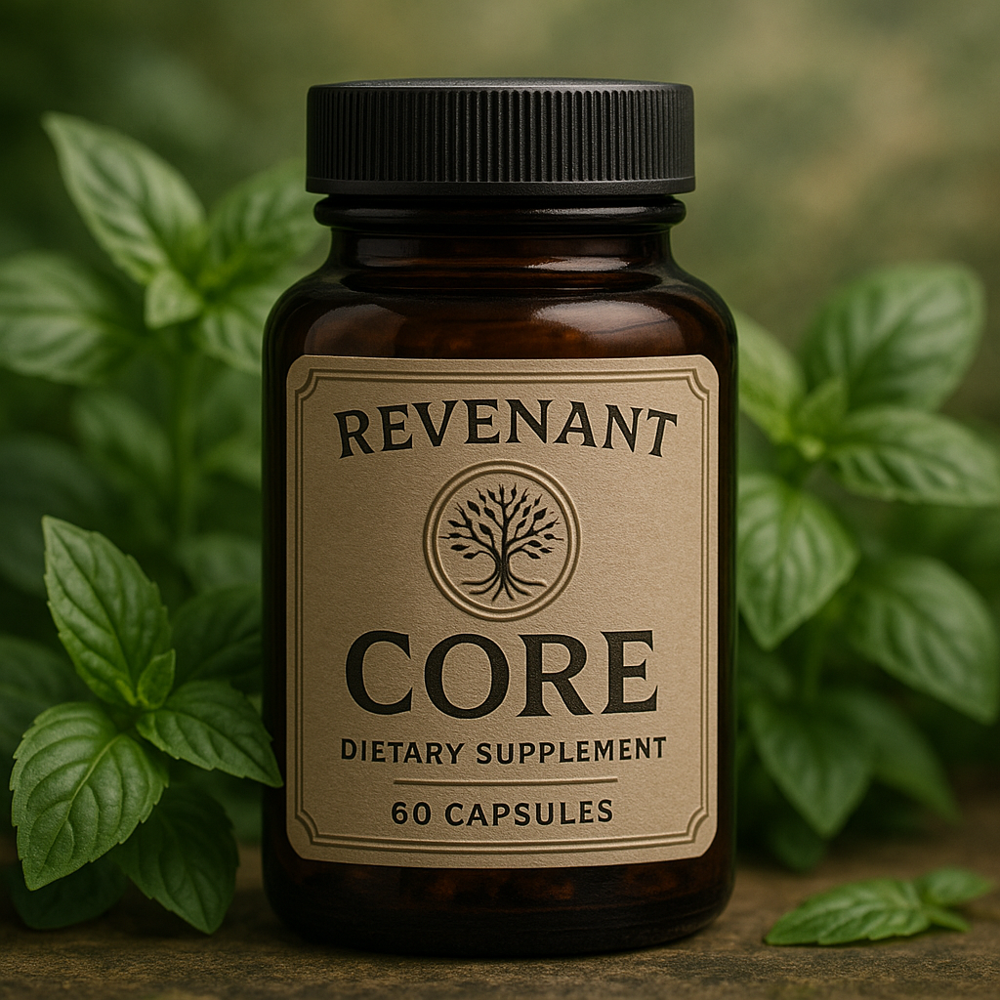
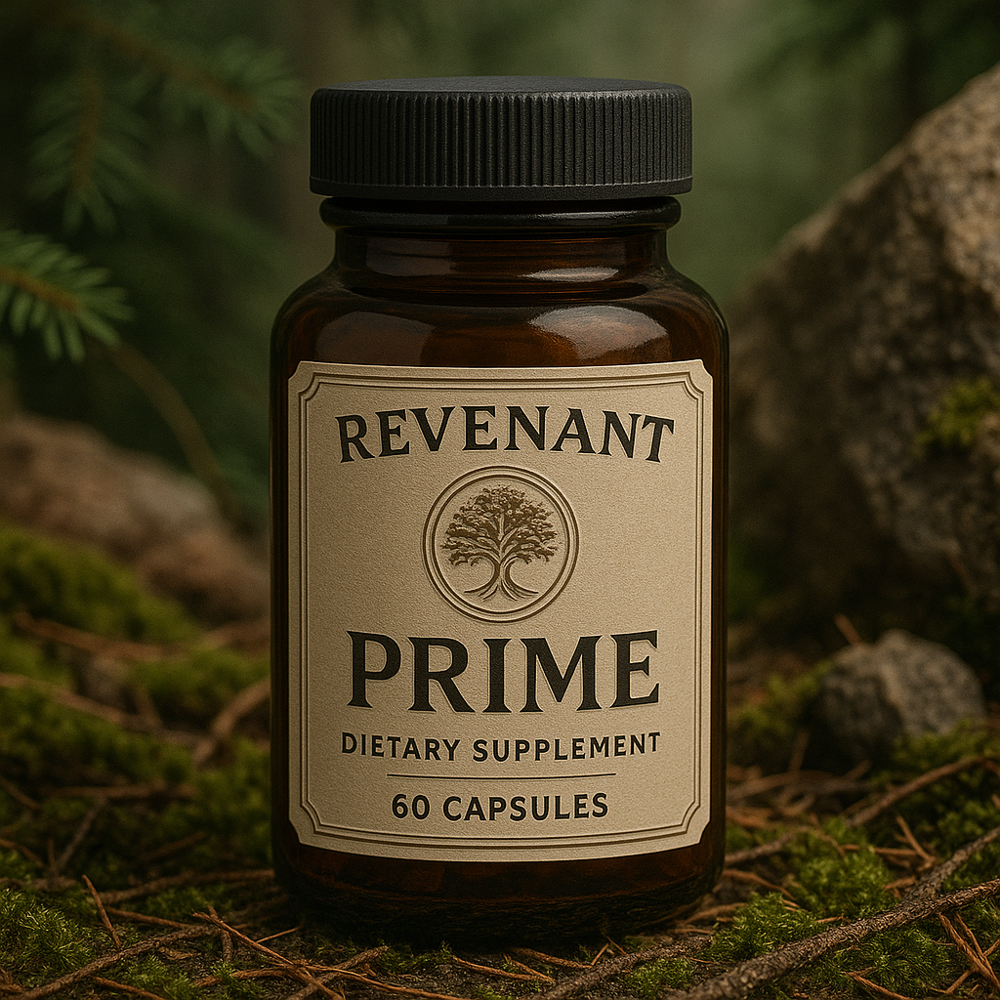

What is Revenant One?
Revenant One is a series of recovery-focused tinctures formulated using peer-reviewed, clinically referenced ingredients to support the body’s natural healing functions. Each blend targets specific biological needs using only validated components without hype, filler, or exaggeration.
Joint Formula
Supports cartilage integrity, joint mobility, and inflammation balance. Featuring Boswellia serrata, MSM, and Glucosamine — all referenced in leading medical journals.
Muscle Formula
Promotes post-exertion repair and protein synthesis using clinically supported amino acid blends, magnesium, and natural anti-inflammatories.

Night Formula
Designed to enhance natural sleep cycles and improve sleep quality without dependency. Includes L-Theanine and GABA with proven efficacy.

Core Formula
Balances foundational systems including immunity, metabolism, and hormonal function with adaptogens and essential micronutrients.
Prime Formula
Optimizes vitality, circulation, and resilience using antioxidants, mitochondrial co-factors, and hormone-supportive compounds.
